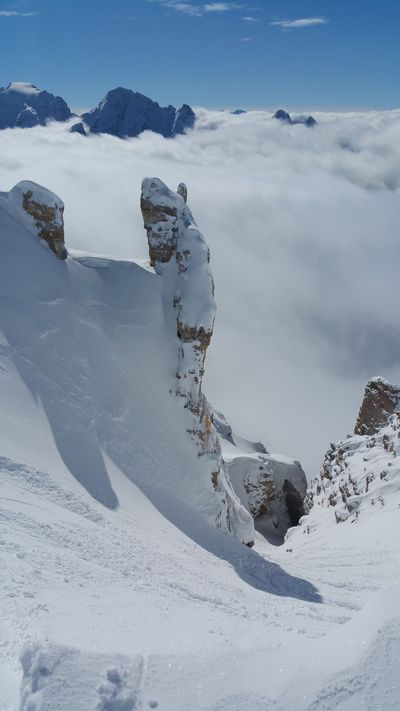

Publications
{% for paper in site.data.research.publications %}
{% include paper_citation.html paper=paper %}
{% endfor %}
Working Papers
{% for paper in site.data.research.working_papers %}
{% include paper_citation.html paper=paper %}
{% endfor %}
Research in Progress
{% for paper in site.data.research.in_progress %}
- {{ paper.title }}
{%- if paper.support -%}
{%- endif -%}
{% endfor %}
Additional Research Media Coverage
{% for media in site.data.research.media %}
- {{ media.name }}
{% endfor %}
